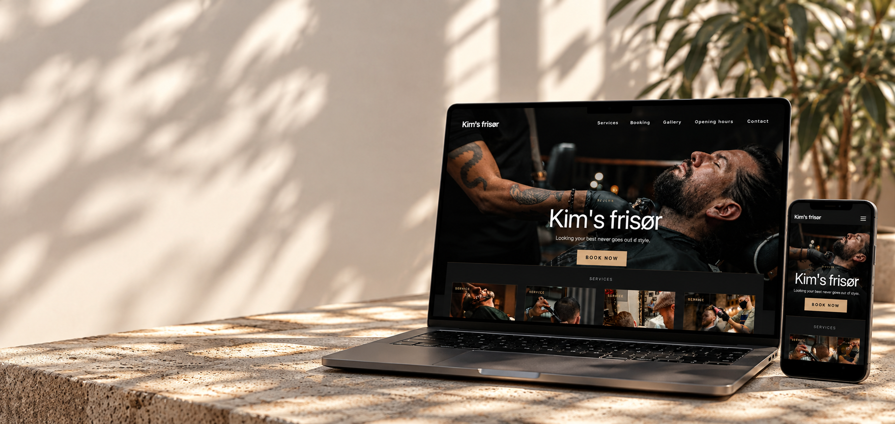
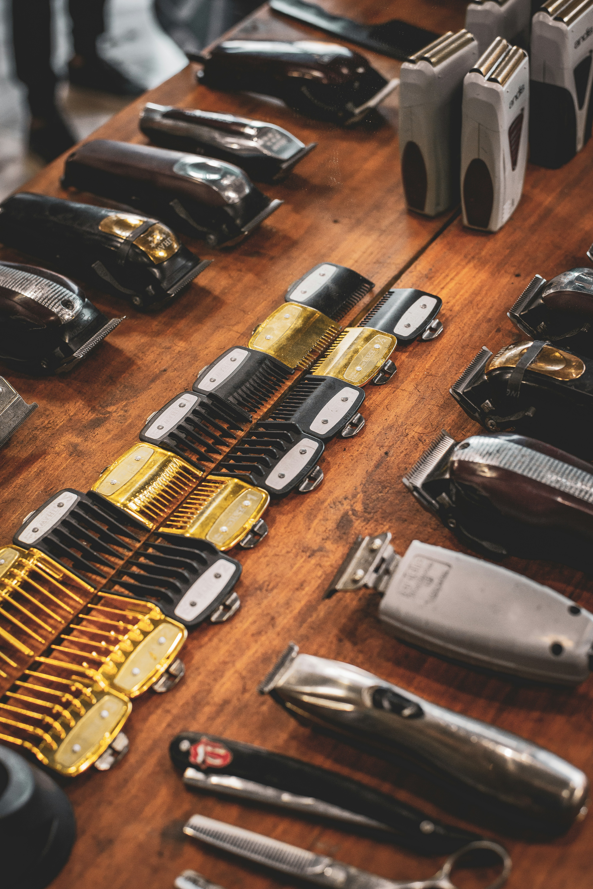
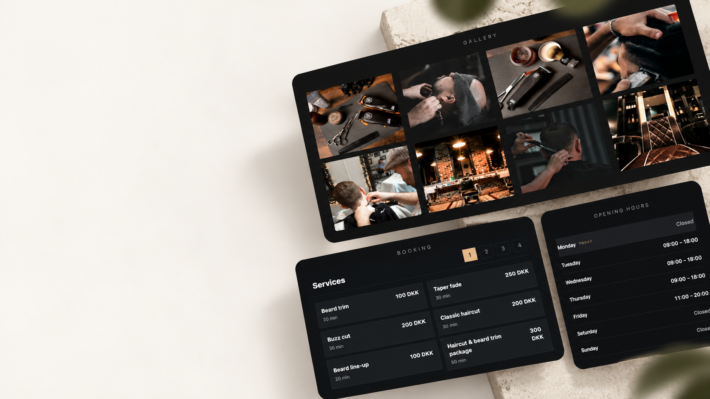
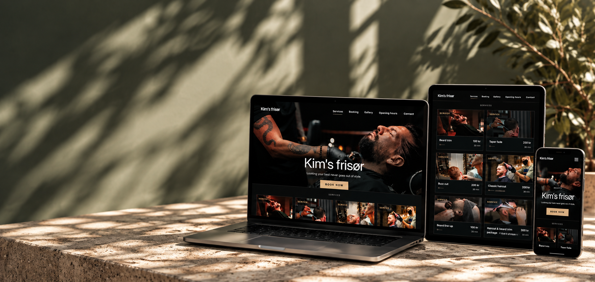

Research
Understanding the business, its customers and what the website needed to achieve.

KIM'S FRISØR — CASE STUDY
A complete digital solution designed to present services clearly, build trust and make booking an appointment simple.
01 — OVERVIEW
Kim's Frisør needed a modern website that reflects the quality of their work, clearly presents services and makes it easy for clients to book an appointment. The goal was to create a clean, trustworthy and easy-to-manage solution that works on all devices.

02 — PROCESS
A focused process from understanding the business and planning the experience to designing, developing and testing the final website.
Understanding the business, its customers and what the website needed to achieve.
Defining the content, user flow and structure before moving into visual design and development.
Creating the interface and turning it into a working website with frontend, backend and database.
Testing usability, responsiveness and functionality before preparing the final website.

03 — VISUAL DESIGN
A minimal and stylish visual identity with a dark, modern aesthetic that reflects the barber's brand and creates a professional impression.
COLOURS
TYPOGRAPHY
DM Sans04 — EXPERIENCE
The experience keeps the most important information easy to find while giving customers a straightforward path from exploring services to booking an appointment.
Services, prices and duration are presented clearly so customers can quickly compare their options.
A focused booking flow makes choosing a service, date and time straightforward.
Opening hours and contact details are easy to find without distracting from the main experience.

05 — FINAL RESULT
The final website combines a strong visual identity with a responsive experience designed to feel consistent across desktop and mobile.